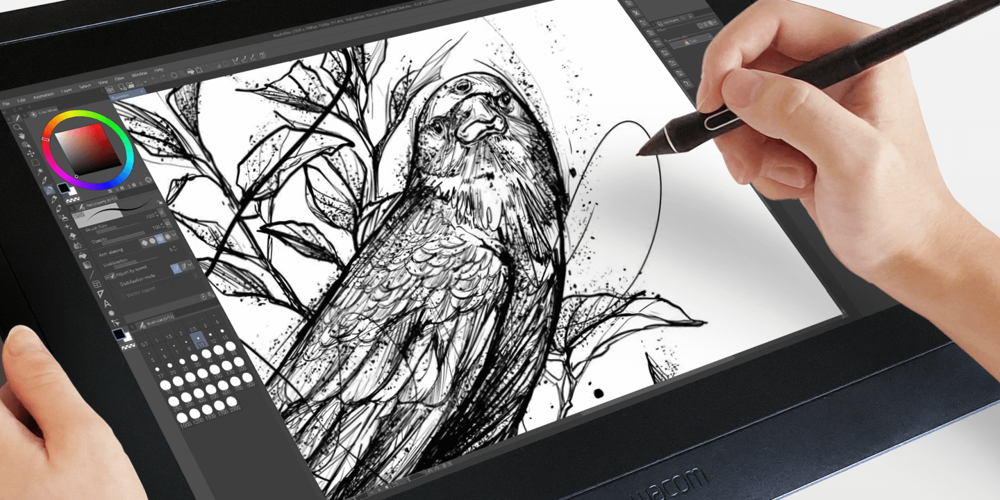

I have read the article “Concepts, Notations, Software, Art” by Florian Cramer and got to know the concepts and symbolic representations of software art as well as its applications in art and culture.

During the reading process, I deeply resonated with the view put forward by Cramer that “software itself can become a part of art”. Usually, we regard the computer as a tool for display media and overlook the uniqueness of software in art creation. The article points out that especially in generative art, the programming and algorithms of software are not only tools but also directly participate in the art creation process. Then I realized that artworks generated through code are not just about demonstrating technology but also exploring the interactive relationship between the computer and art.
Cramer compared code to musical scores, which made me understand the artistic potential of code more intuitively. Code, like musical scores, is a conceptual symbol that can generate actual visible art by executing the code. The article mentioned the example of Dadaist poetry, which demonstrated the artistic expression ability of programming through text generation algorithms. This programmed artistic expression way made me recognise that the expressive dimension of code is not only about logic but can also be used for the expression of emotions and creativity.
In addition, the article also emphasised the deep connection between software art and conceptual art, comparing “instruction code” with the “instructions” in conceptual art and revealing the conceptual characteristics of software art. I understood that software art is not just the execution of program code but also contains the intentions and thoughts of the designer. From this perspective, I learned to view the design and use of software from the “concept” angle and recognised that behind each line of code lies the designer’s ideas and may even carry cultural and social values.
Besides, I also recognised the difference between generative art and non-generative art. Generative art generates new content in real time through the execution of algorithms and code, while non-generative art relies on pre-existing digital content. This concept made me see that generative art has more creativity and improvisation because the content of its works is generated by code in real time rather than being fixed. I am deeply interested in the dynamism and unpredictability of this art form and will next think about how to incorporate generative elements into my own projects to make the works more interactive and changeable.
Finally, Cramer also reviewed the history of early computer art, from John Cage’s algorithmic art to Ted Nelson’s hypertext system, providing me with a more comprehensive background knowledge. This made me understand that modern software art has drawn experience from these early experiments and gradually developed unique styles and expressions. I realised that nowadays artists no longer just write code but use existing tools and code for creation, forming a “reutilisation” culture. This historical perspective gave me a new understanding of my own programming creations.
To sum up, I think this article made me realize that software is not only an auxiliary tool for art creation but can itself be a part of art. Through code and algorithms, artists can express concepts and emotions, providing new possibilities for generative art. I also realized that in software art creation, code is no longer a pure technical language but a carrier of thoughts and cultures. Each piece of code not only has its functionality but also carries the designer’s aesthetics and thoughts. Through the study of generative art, I find the dynamic, real-time generated art form very interesting and should next think about how to try this expression way in future projects. Finally, the comparison between formalism and culturalism reminds me that art creation should not only focus on aesthetics but also reflect on its social impacts. In the future, I will pay more attention to the cultural and social significance of the works so as to incorporate deeper expressions in the creation.